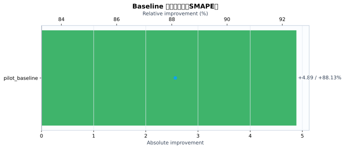
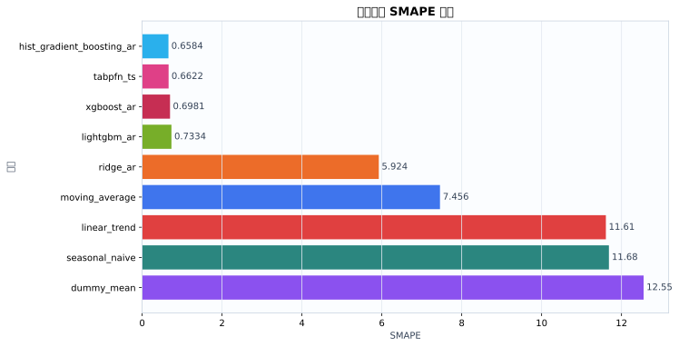
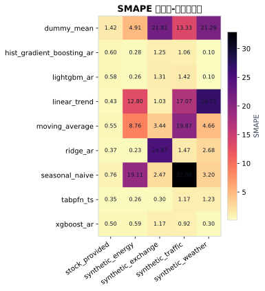
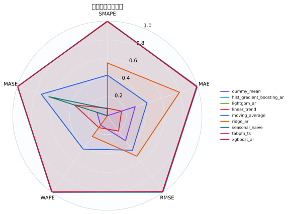
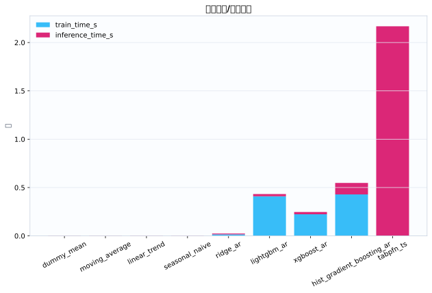
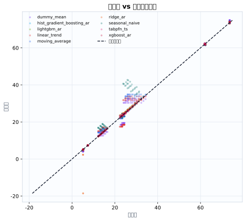
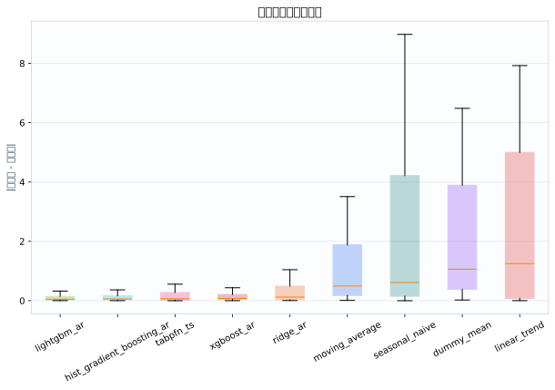

数据集5
模型9
指标行数45
预测行数1512
结论摘要
- 主指标 SMAPE 下，当前 run 的最佳模型是 hist_gradient_boosting_ar，平均值为 0.6584。
- 相对 baseline pilot_baseline，当前最佳模型在 SMAPE 上提升 88.13% （absolute=+4.886）。
核心指标卡片
SMAPE
0.6584
最佳模型: hist_gradient_boosting_ar
GPU_MEMORY_MB
0
最佳模型: dummy_mean
INFERENCE_TIME_S
0.003285
最佳模型: dummy_mean
MAE
0.1342
最佳模型: hist_gradient_boosting_ar
MASE
0.3885
最佳模型: hist_gradient_boosting_ar
MSE
0.04856
最佳模型: hist_gradient_boosting_ar
RMSE
0.1684
最佳模型: hist_gradient_boosting_ar
TRAIN_TIME_S
0
最佳模型: tabpfn_ts
Baseline 对比
| baseline | metric | current_model | current_value | baseline_model | baseline_value | absolute_difference | relative_improvement_pct |
|---|---|---|---|---|---|---|---|
| pilot_baseline | smape | hist_gradient_boosting_ar | 0.6584 | ridge_ar | 5.545 | 4.886 | 88.13 |
动态交互图表
指标排名动态图
残差直方图
效率-精度散点图
数据集排名轨迹
Matplotlib 可视化图表
Baseline 改变量图
{kind=link}

Baseline/模型平均指标柱状图
{kind=link}

数据集-模型热力图
{kind=link}

多指标雷达图
{kind=link}

运行时间图
{kind=link}

真实值-预测值散点图
{kind=link}

残差箱线图
{kind=link}

训练过程曲线
N/A：当前 run 目录未发现 loss/accuracy/TensorBoard/wandb 训练曲线文件。
错误分析与样本分析
当前支持预测任务的残差与真实-预测散点分析；分类 confusion matrix / ROC / PR 曲线需要真实分类输出后自动启用。
原始 Metrics
| run_id | model | dataset | domain | horizon | context_length | mse | mae | rmse | smape | wape | mase | train_time_s | inference_time_s | gpu_memory_mb |
|---|---|---|---|---|---|---|---|---|---|---|---|---|---|---|
| tabpfn_ts_20260528_155126 | dummy_mean | synthetic_energy | energy | 12 | 192 | 0.8033 | 0.6925 | 0.8963 | 4.914 | 4.916 | 1.529 | 0.0004449 | 0.003788 | 0 |
| tabpfn_ts_20260528_155126 | seasonal_naive | synthetic_energy | energy | 12 | 192 | 11.04 | 2.965 | 3.322 | 19.11 | 21.05 | 6.546 | 0.000329 | 0.003422 | 0 |
| tabpfn_ts_20260528_155126 | moving_average | synthetic_energy | energy | 12 | 192 | 2.088 | 1.264 | 1.445 | 8.756 | 8.973 | 2.791 | 0.0002921 | 0.003542 | 0 |
| tabpfn_ts_20260528_155126 | linear_trend | synthetic_energy | energy | 12 | 192 | 4.227 | 1.898 | 2.056 | 12.8 | 13.47 | 4.19 | 0.0003481 | 0.003967 | 0 |
| tabpfn_ts_20260528_155126 | ridge_ar | synthetic_energy | energy | 12 | 192 | 0.002026 | 0.03299 | 0.04501 | 0.2309 | 0.2342 | 0.07283 | 0.01734 | 0.00966 | 0 |
| tabpfn_ts_20260528_155126 | hist_gradient_boosting_ar | synthetic_energy | energy | 12 | 192 | 0.002608 | 0.04097 | 0.05107 | 0.2822 | 0.2908 | 0.09046 | 0.5207 | 0.1428 | 0 |
| tabpfn_ts_20260528_155126 | lightgbm_ar | synthetic_energy | energy | 12 | 192 | 0.00173 | 0.03608 | 0.0416 | 0.2567 | 0.2561 | 0.07967 | 0.4478 | 0.02613 | 0 |
| tabpfn_ts_20260528_155126 | xgboost_ar | synthetic_energy | energy | 12 | 192 | 0.009397 | 0.08325 | 0.09694 | 0.5921 | 0.591 | 0.1838 | 0.2547 | 0.02157 | 0 |
| tabpfn_ts_20260528_155126 | tabpfn_ts | synthetic_energy | energy | 12 | 192 | 0.002197 | 0.03623 | 0.04688 | 0.2566 | 0.2572 | 0.07999 | 0 | 3.154 | 0 |
| tabpfn_ts_20260528_155126 | dummy_mean | synthetic_traffic | traffic | 12 | 192 | 19.21 | 3.852 | 4.383 | 13.33 | 13.84 | 2.706 | 0.0006406 | 0.003447 | 0 |
| tabpfn_ts_20260528_155126 | seasonal_naive | synthetic_traffic | traffic | 12 | 192 | 145.5 | 10.93 | 12.06 | 32.88 | 39.28 | 7.679 | 0.0003058 | 0.00345 | 0 |
| tabpfn_ts_20260528_155126 | moving_average | synthetic_traffic | traffic | 12 | 192 | 42.87 | 6.005 | 6.548 | 19.87 | 21.57 | 4.217 | 0.0002981 | 0.003612 | 0 |
| tabpfn_ts_20260528_155126 | linear_trend | synthetic_traffic | traffic | 12 | 192 | 31.46 | 5.06 | 5.609 | 17.07 | 18.18 | 3.553 | 0.0002973 | 0.003984 | 0 |
| tabpfn_ts_20260528_155126 | ridge_ar | synthetic_traffic | traffic | 12 | 192 | 0.1875 | 0.4001 | 0.433 | 1.472 | 1.438 | 0.281 | 0.0169 | 0.009354 | 0 |
| tabpfn_ts_20260528_155126 | hist_gradient_boosting_ar | synthetic_traffic | traffic | 12 | 192 | 0.1226 | 0.2873 | 0.3502 | 1.063 | 1.032 | 0.2018 | 0.4473 | 0.1158 | 0 |
| tabpfn_ts_20260528_155126 | lightgbm_ar | synthetic_traffic | traffic | 12 | 192 | 0.2707 | 0.389 | 0.5203 | 1.421 | 1.398 | 0.2732 | 0.4479 | 0.02678 | 0 |
| tabpfn_ts_20260528_155126 | xgboost_ar | synthetic_traffic | traffic | 12 | 192 | 0.1198 | 0.2593 | 0.3462 | 0.9242 | 0.9317 | 0.1821 | 0.2188 | 0.02837 | 0 |
| tabpfn_ts_20260528_155126 | tabpfn_ts | synthetic_traffic | traffic | 12 | 192 | 0.1155 | 0.3176 | 0.3398 | 1.175 | 1.141 | 0.2231 | 0 | 2.275 | 0 |
| tabpfn_ts_20260528_155126 | dummy_mean | synthetic_weather | weather | 12 | 192 | 20.7 | 4.531 | 4.55 | 21.29 | 19.25 | 22.14 | 0.0003811 | 0.002338 | 0 |
| tabpfn_ts_20260528_155126 | seasonal_naive | synthetic_weather | weather | 12 | 192 | 0.7422 | 0.7493 | 0.8615 | 3.199 | 3.183 | 3.66 | 0.0002917 | 0.002533 | 0 |
| tabpfn_ts_20260528_155126 | moving_average | synthetic_weather | weather | 12 | 192 | 1.325 | 1.076 | 1.151 | 4.664 | 4.57 | 5.256 | 0.0002746 | 0.002464 | 0 |
| tabpfn_ts_20260528_155126 | linear_trend | synthetic_weather | weather | 12 | 192 | 30.92 | 5.548 | 5.561 | 26.72 | 23.57 | 27.11 | 0.0002722 | 0.002657 | 0 |
| tabpfn_ts_20260528_155126 | ridge_ar | synthetic_weather | weather | 12 | 192 | 0.5608 | 0.6352 | 0.7488 | 2.678 | 2.698 | 3.103 | 0.01133 | 0.006253 | 0 |
| tabpfn_ts_20260528_155126 | hist_gradient_boosting_ar | synthetic_weather | weather | 12 | 192 | 0.0009902 | 0.02477 | 0.03147 | 0.105 | 0.1052 | 0.121 | 0.2687 | 0.07914 | 0 |
| tabpfn_ts_20260528_155126 | lightgbm_ar | synthetic_weather | weather | 12 | 192 | 0.0006984 | 0.02341 | 0.02643 | 0.09943 | 0.09946 | 0.1144 | 0.2877 | 0.01483 | 0 |
| tabpfn_ts_20260528_155126 | xgboost_ar | synthetic_weather | weather | 12 | 192 | 0.007179 | 0.06964 | 0.08473 | 0.3001 | 0.2959 | 0.3402 | 0.2173 | 0.01999 | 0 |
| tabpfn_ts_20260528_155126 | tabpfn_ts | synthetic_weather | weather | 12 | 192 | 0.1491 | 0.2881 | 0.3861 | 1.23 | 1.224 | 1.408 | 0 | 1.391 | 0 |
| tabpfn_ts_20260528_155126 | dummy_mean | synthetic_exchange | economics | 12 | 192 | 1.033 | 1.015 | 1.016 | 21.81 | 19.67 | 23.04 | 0.0004664 | 0.00339 | 0 |
| tabpfn_ts_20260528_155126 | seasonal_naive | synthetic_exchange | economics | 12 | 192 | 0.02396 | 0.1259 | 0.1548 | 2.473 | 2.44 | 2.858 | 0.0003012 | 0.006646 | 0 |
| tabpfn_ts_20260528_155126 | moving_average | synthetic_exchange | economics | 12 | 192 | 0.03386 | 0.1748 | 0.184 | 3.44 | 3.387 | 3.969 | 0.0003319 | 0.003554 | 0 |
| tabpfn_ts_20260528_155126 | linear_trend | synthetic_exchange | economics | 12 | 192 | 0.0034 | 0.0532 | 0.05831 | 1.031 | 1.031 | 1.208 | 0.0002988 | 0.003873 | 0 |
| tabpfn_ts_20260528_155126 | ridge_ar | synthetic_exchange | economics | 12 | 192 | 47.49 | 2.304 | 6.891 | 24.87 | 44.65 | 52.32 | 0.01668 | 0.009285 | 0 |
| tabpfn_ts_20260528_155126 | hist_gradient_boosting_ar | synthetic_exchange | economics | 12 | 192 | 0.005818 | 0.06418 | 0.07628 | 1.246 | 1.244 | 1.457 | 0.4809 | 0.14 | 0 |
| tabpfn_ts_20260528_155126 | lightgbm_ar | synthetic_exchange | economics | 12 | 192 | 0.006378 | 0.06739 | 0.07986 | 1.309 | 1.306 | 1.53 | 0.4495 | 0.02582 | 0 |
| tabpfn_ts_20260528_155126 | xgboost_ar | synthetic_exchange | economics | 12 | 192 | 0.005434 | 0.0603 | 0.07371 | 1.17 | 1.169 | 1.369 | 0.209 | 0.02321 | 0 |
| tabpfn_ts_20260528_155126 | tabpfn_ts | synthetic_exchange | economics | 12 | 192 | 0.0003669 | 0.01559 | 0.01916 | 0.3013 | 0.3021 | 0.3539 | 0 | 1.977 | 0 |
| tabpfn_ts_20260528_155126 | dummy_mean | stock_provided | finance | 12 | 192 | 0.5444 | 0.5203 | 0.7378 | 1.418 | 1.091 | 0.1473 | 0.0004238 | 0.003465 | 0 |
| tabpfn_ts_20260528_155126 | seasonal_naive | stock_provided | finance | 12 | 192 | 0.1452 | 0.2786 | 0.381 | 0.7645 | 0.5844 | 0.07886 | 0.0003003 | 0.003383 | 0 |
| tabpfn_ts_20260528_155126 | moving_average | stock_provided | finance | 12 | 192 | 0.07349 | 0.1996 | 0.2711 | 0.5478 | 0.4186 | 0.05649 | 0.0002907 | 0.003411 | 0 |
| tabpfn_ts_20260528_155126 | linear_trend | stock_provided | finance | 12 | 192 | 0.08779 | 0.2292 | 0.2963 | 0.4308 | 0.4807 | 0.06488 | 0.0002839 | 0.003765 | 0 |
| tabpfn_ts_20260528_155126 | ridge_ar | stock_provided | finance | 12 | 192 | 0.05513 | 0.1634 | 0.2348 | 0.374 | 0.3427 | 0.04625 | 0.01646 | 0.009067 | 0 |
| tabpfn_ts_20260528_155126 | hist_gradient_boosting_ar | stock_provided | finance | 12 | 192 | 0.1107 | 0.2539 | 0.3328 | 0.5955 | 0.5326 | 0.07188 | 0.4266 | 0.1161 | 0 |
| tabpfn_ts_20260528_155126 | lightgbm_ar | stock_provided | finance | 12 | 192 | 0.07694 | 0.1985 | 0.2774 | 0.5809 | 0.4164 | 0.05619 | 0.4142 | 0.02249 | 0 |
| tabpfn_ts_20260528_155126 | xgboost_ar | stock_provided | finance | 12 | 192 | 0.1171 | 0.2622 | 0.3422 | 0.5039 | 0.5499 | 0.0742 | 0.2178 | 0.02461 | 0 |
| tabpfn_ts_20260528_155126 | tabpfn_ts | stock_provided | finance | 12 | 192 | 0.04182 | 0.1584 | 0.2045 | 0.3482 | 0.3323 | 0.04484 | 0 | 2.044 | 0 |
配置参数
展开/折叠配置
{
"/home/wanyi/zy_test/tabpfn-ts-benchmark/configs/config.yaml": {
"defaults": [
{
"dataset": "etth1"
},
{
"model": "seasonal_naive"
},
{
"experiment": "e1_zeroshot"
},
"_self_"
],
"seed": 42,
"output_dir": "results",
"wandb": {
"project": "tabpfn-quant",
"mode": "offline",
"entity": null
},
"hydra": {
"run": {
"dir": "outputs/${now:%Y-%m-%d}/${now:%H-%M-%S}"
}
}
}
}运行环境
{
"python": "3.10.12",
"platform": "Linux-6.8.0-111-generic-x86_64-with-glibc2.35",
"git_head": "N/A",
"git_dirty": false
}Warnings
- 无
产物链接
- metrics.json
- summary.csv
- 源 run 目录: /home/wanyi/zy_test/tabpfn-ts-benchmark/results/full_benchmark_v2_c192_h12_s3
- 主指标: smape